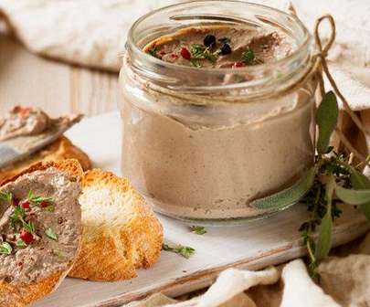

Перебити в блендері всі інгредієнти та залишити в холодильнику на 30-60 хвилин. Подавати з грінками з білої чіабати.
- тофу копчений (250г.)
- копчена паприка
- листкки норі (2 шт.)
- рослинне масло (2ст.л.)
Перебити в блендері всі інгредієнти та залишити в холодильнику на 30-60 хвилин. Подавати з грінками з білої чіабати.